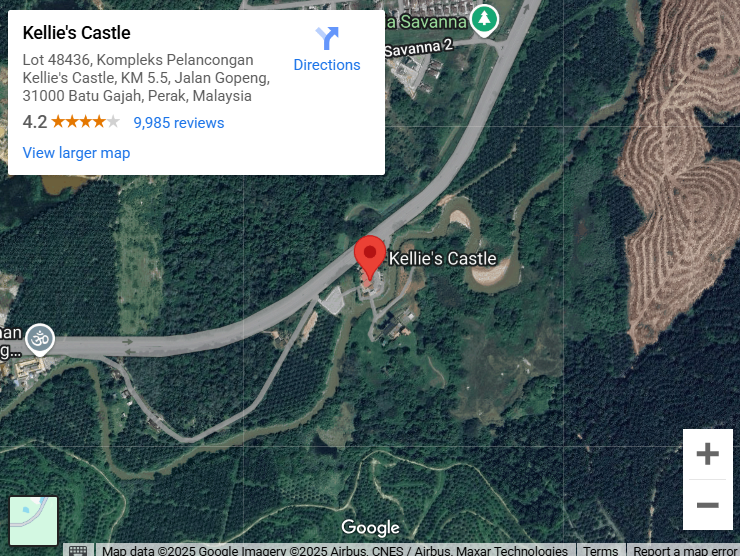

Visiting Kellie’s Castle is a must for history enthusiasts and architecture lovers alike. Here’s all you need to know:
Opening Hours: 9:30 AM - 5:30 PM (Daily)
Tickets: RM5 (Malaysian), RM10 (Foreigners)
Parking RM 2
DSLR cameras will be charged extra (RM 50!) which is a bit silly in this day and age when phones take such high quality photos.

Lot 48436, Kompleks Pelancongan Kellie's Castle, KM 5.5, Jalan Gopeng, 31000 Batu Gajah, Perak